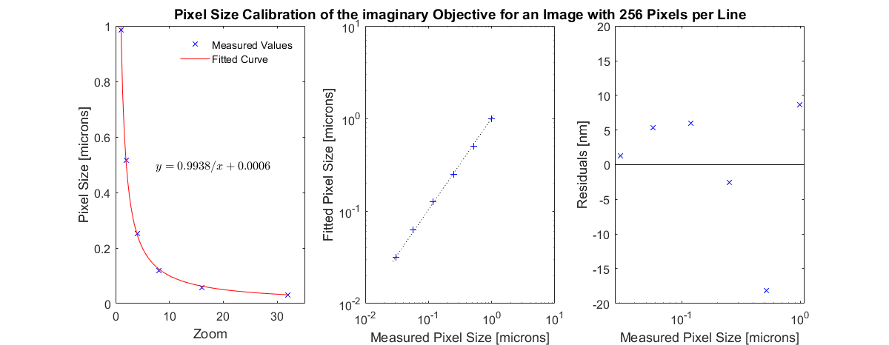

CalibrationPixelSize
Store pixel size calibration
Contents
Usage
OBJ = CalibrationPixelSize(ZOOM, PXSIZE, IMGSIZE, OBJECTIVE, DATE,
NAME, PERSON, FUNRAW)
Arguments
- ZOOM is a vector of zoom values at which the pixel size is known.
- PXSIZE is a vector of pixel sizes at the given zoom values.
- IMGSIZE is a scalar integer specifying the number of pixels in the calibration images.
- OBJECTIVE is the objective that the calibration is for.
- DATE is the date the calibration was performed.
- NAME is the name of the calibration.
- PERSON is the person who performed the calibration.
- FUNRAW is an unparameterised function handle describing the relationship between zoom and pixel size.
Details
CalibrationPixelSize contains a calibration relating a given microscope zoom factor to a known physical pixel size (in units of distance) for a given objective.
See Also
Examples
Create a CalibrationPixelSize object
The following example will illustrate the process of creating a CalibrationPixelSize object. Normally this process only needs to be done once per objective/microscope combination.
% Specify some zoom values zoom = 2.^(0:5) % Specify some values for pixel size at the defined zoom, with added noise pxSize = (1./zoom).*(1 + 0.05*randn(1, numel(zoom))) % Specify the original number of pixels in the calibration images imgSize = 256; % Specify some other aspects of the calibration objective = 'imaginary'; date = 'yesterday'; name = 'test calibration'; person = 'Dr Who'; funRaw = @CalibrationPixelSize.funRawHyperbola; % Call the CalibrationPixelSize constructor cal001 = CalibrationPixelSize(zoom, pxSize, imgSize, objective, date, ... name, person, funRaw) % Show a plot of the calibration. (Note: your image may differ due to the % random data used to generate the calibration) cal001.plot();
zoom =
1 2 4 8 16 32
pxSize =
0.8811 0.5494 0.2542 0.1249 0.0609 0.0339
cal001 =
CalibrationPixelSize with properties:
date: 'yesterday'
funRaw: @CalibrationPixelSize.funRawHyperbola
imgSize: 256
name: 'test calibration'
objective: 'imaginary'
person: 'Dr Who'
pixelSize: [6x1 double]
zoom: [6x1 double]
 Saving a CalibrationPixelSize object
% Save the calibration cal001.save('cal001.mat');
Loading a CalibrationPixelSize object
% Load the calibration cal001_reloaded = CalibrationPixelSize.load('cal001.mat') % Check that the loaded calibration is the same as the one we saved isEqual = cal001 == cal001_reloaded
cal001_reloaded =
CalibrationPixelSize with properties:
date: 'yesterday'
funRaw: @CalibrationPixelSize.funRawHyperbola
imgSize: 256
name: 'test calibration'
objective: 'imaginary'
person: 'Dr Who'
pixelSize: [6x1 double]
zoom: [6x1 double]
isEqual =
1
Creating a 'dummy' CalibrationPixelSize object
The following example will illustrate the process of creating a 'dummy' CalibrationPixelSize object. This process is needed to specify the pixel size for images that do not possess the necessary metadata to create their own calibration (as normally happens with BioFormats images) or use a calibration based on the zoom value (as normally happens with SCIM_Tif images).
% Specify the desired pixel size pxSizeImg = 1.234; % um % Specify the image size. This is important to set correctly, because the % pixel size for an image depends on both the calibration and the image % size. For example, for the same calibration, a 128 x 128 pixel image % will have a pixel size two times larger than a 256 x 256 pixel image. imgSizeDummy = 256; % Specify the remaining information zoomDummy = [1 100]; pxSizeDummy = pxSizeImg.*ones(size(zoomDummy)); objectiveDummy = 'dummy'; dateDummy = 'dummy'; nameDummy = 'dummy'; personDummy = 'dummy'; funRawDummy = @CalibrationPixelSize.funRawDummy; % Create the calibration object calDummy = CalibrationPixelSize(zoomDummy, pxSizeDummy, imgSizeDummy, ... objectiveDummy, dateDummy, nameDummy, personDummy, funRawDummy); % Show the pixel size that will be returned zoom05 = 5; pxSize05_1 = calDummy.calc_pixel_size(zoom05, imgSizeDummy)
pxSize05_1 =
1.2340
% Note that the pixel size is different for different image sizes
pxSize05_2 = calDummy.calc_pixel_size(zoom05, imgSizeDummy/2)
pxSize05_2 =
2.4680
% For dummy calibrations, the pixel size is the same for all zoom values
zoomRange = 1:10:100;
pxSize05_range = calDummy.calc_pixel_size(zoomRange, imgSizeDummy)
pxSize05_range =
Columns 1 through 7
1.2340 1.2340 1.2340 1.2340 1.2340 1.2340 1.2340
Columns 8 through 10
1.2340 1.2340 1.2340